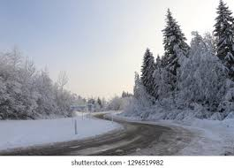
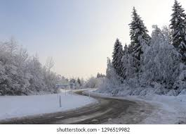

Food
Food is a substance consume to provide nutritional support for an organism.Food is usually of plant,animal or fungal origin, and contain essential nutrients such as carbohydrates, proteins,vitamins,minerals and fats.
Food is any substance consumed to provide nutritional support for an organism.
Pizza
 Pizza is a dish of Italian origin consisting of a usually round, flat base of leavened wheat-based dough topped with tomatoes, cheese, and often various other ingredients (such as anchovies, mushrooms, onions, olives, vegetables, meat, etc.) which is then baked at a high temperature, traditionally in a wood-fired oven. A small pizza is sometimes called a pizzetta.
Pizza is a dish of Italian origin consisting of a usually round, flat base of leavened wheat-based dough topped with tomatoes, cheese, and often various other ingredients (such as anchovies, mushrooms, onions, olives, vegetables, meat, etc.) which is then baked at a high temperature, traditionally in a wood-fired oven. A small pizza is sometimes called a pizzetta.